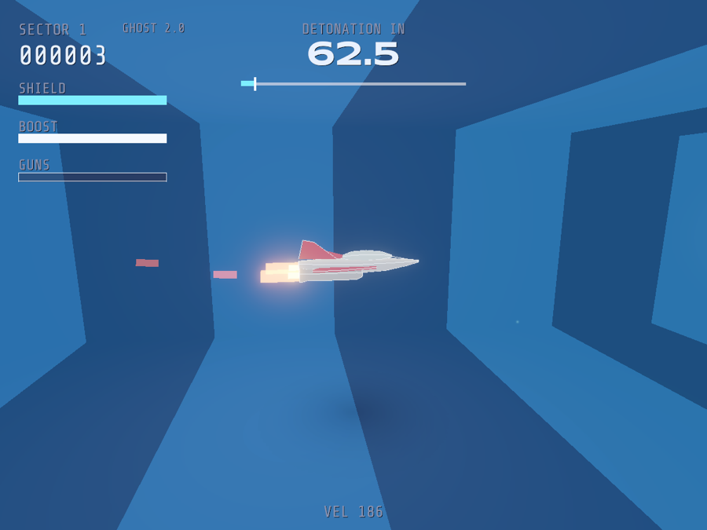
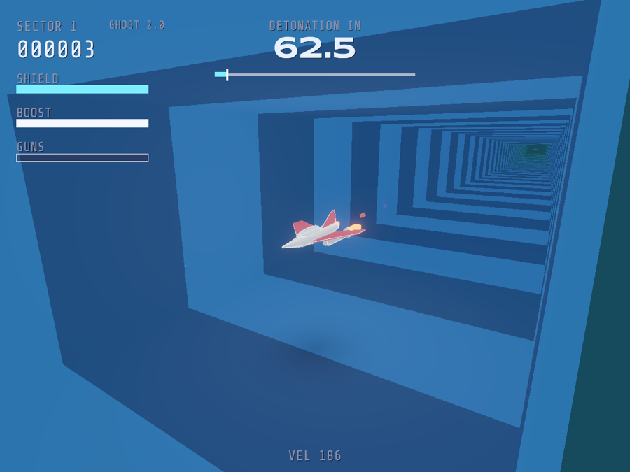
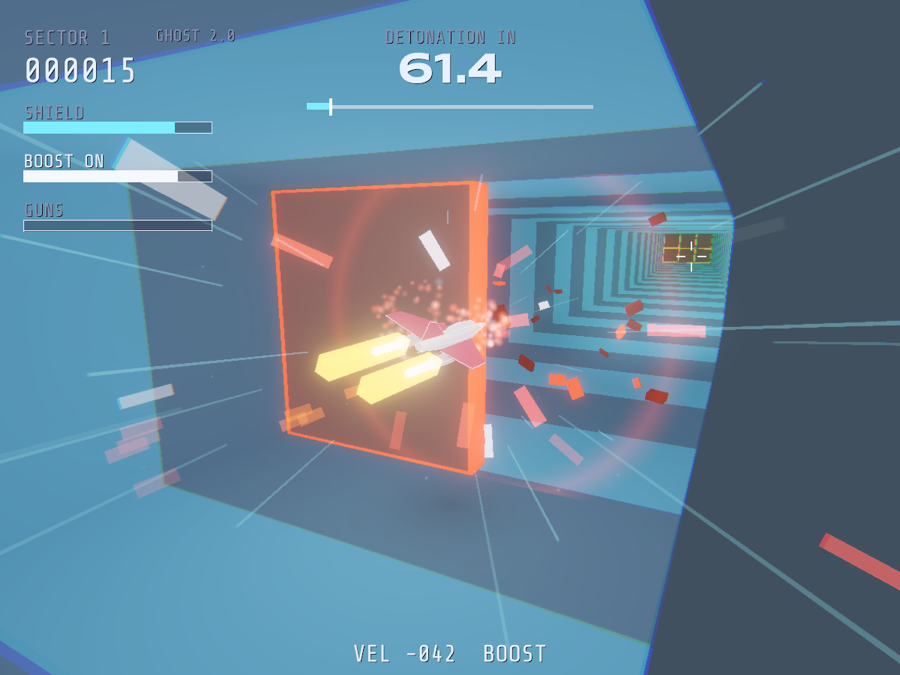

Doomsday Tunnels 3D · Pilot's reference · Sheet 1 of 1
The ship you are flying is a rental
Prestige Rocket Rental vehicle, light grey with a white stripe down the spine, red wings and tail, yellow nozzles. Seen here from the nose, the way the Tunnels of Armageddon manual drew its own. Every figure on this sheet is the number the flight model actually uses.
Fig. 1 · Front elevation, not to scale. Length about 0.7 m, span 0.48 m, in a tunnel 2.6 m wide and 1.7 m high.

Fig. 2 · Port side, sector 1

Fig. 3 · From ahead

Fig. 4 · Under boost
Vehicle data plate Prestige Rocket Rental · mileage plan: Earth
Cruise
20 m/s in sector 1, 2 m/s more each sector, 38 m/s at most. Boost multiplies by 1.5.
Boost reserve
6 s with the button held; refilled by a boost pickup.
Guns
Shots fly 95 m/s faster than the ship, 30 m ahead. 18 in a row overheat the guns; they return once cooled to 30 percent.
Shield
100 units. Red wall 20, gate block 18, mine 16, fork stub 18, moving hazard 16, scraping 11 a second. A shield pickup is 25; a cleared sector refills 20.
Spare ships
None to start, five at most. One waits at the end of any sector whose ship token you grabbed (it is always down the dark branch).
Hitbox
Nose 0.42 m ahead of centre, wings 0.24 m to each side, hull 0.10 m above and below. A fresh ship is untouchable for 3 s.
Off a red wall
Held just short of it, thrown back at 5 m/s or 30 percent of your speed, and shoved toward the nearest gap, far enough to clear it and no further.
Warp
Climbs to 420 m/s over 1.4 s; white-out at 1.5 s; the clear card at 2.6 s.
Return with shield at received level
Debbie at Prestige Rocket Rental would like it noted that the vehicle has left the planet, which is a different mileage plan, and that in the event the pilot does not make it back, the company will be billing the estate.